Story expansions2 DLC
The two paid expansions add a story campaign, new places and their own gear.

Alpine Unrest
It’s December of 1989, in the desolate forests and hills of the Swedish countryside. A month has passed since the population vanished overnight, and you have spent this time exploring the grim open world alone and with friends, sticking to the shadows to scavenge for equipment and weapons in your attempt to stay alive.
- 9 main and 11 side missions in Himfjäll (Alpine Unrest)
- The Himfjäll challenge tree (4 challenges)
Adds 11 apparel pieces, 4 emotes and 1 key or quest item.
What's in it16 items


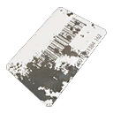
Bergfinken access keycard
Store description
It’s December of 1989, in the desolate forests and hills of the Swedish countryside. A month has passed since the population vanished overnight, and you have spent this time exploring the grim open world alone and with friends, sticking to the shadows to scavenge for equipment and weapons in your attempt to stay alive. All the while, you’ve identified the mastermind behind the events leading up to the attack and it has now led you to Himfjäll. This unexplored island off the east coast might hold more answers, and perhaps something even more valuable - other survivors.
EXPANSION PACK FEATURES
HIMFJÄLL ISLAND
Dusted from coast to coast in snow, this formerly popular ski resort now stands abandoned to the winds and the enemies roaming the area. There is much to discover though, from the cafés and shops of the small towns that pepper Himfjäll, to the ski slopes, trailer park campsites and thick pine forests that cover the island. Additionally, Björntunet stands as a key landmark, this once pleasant ski hotel now being used as a hideout. As long as you stay aware of your surroundings, who knows what you might uncover.
YOU’RE NOT ALONE
Himfjäll might be unexplored and highly dangerous, but there are also clear signs that more information about the machines and the whole situation can be found there. But above simple answers, you have found something infinitely better - a group of survivors who have through the skin of their teeth managed to survive against the machines. These are the first people you have come face to face with since that fateful day, and with each other’s help you might yet survive this invasion.
MORE ACHIEVEMENTS & COLLECTIBLES
The new area is covered in collectibles for you to find, from lost dictaphone journal entries to character biographies. Additionally, there are a whole new batch of achievements for you to try and complete.
ADDITIONAL GAME FEATURES
APOCALYPSE CLASS MACHINES
If you are not vigilant when making your way across the new island, you will sooner or later cross paths with what appears to be a new tier of machines. They bear clear resemblance to their lighter-armed counterparts, but are deadlier on a level previously unseen. Specifically designed by FNIX to hunt down any survivors and overpower any human that would try to fight back, the machines wield weapons so vile, they would be banned under the Geneva convention. From Hunters wielding flamethrowers to runners equipped with biochemical machine guns, you’ll need to rethink and rework your tactics to take these new enemies down. Be warned that Östertörn might no longer safe either, as these Apocalypse Class machines may have found their way to the mainland.
EXPANDED ARSENAL
Your quest for survival will require extensive exploration, and if luck is on your side, you might even stumble upon some new weapons for your arsenal. The KVM 89 Squad Automatic Weapon and KVM 59 Machine Gun can be found while searching around the island, so keep your eyes peeled. With the movement of the Apocalypse Class machines, there is also a potential chance of finding them on Östertörn as well.

FNIX Rising
Strange structures have started to appear along the Southern Coast of Östertörn and they definitely aren't man-made. Perhaps some of the survivors calling themselves "the Resistance" will know more…
- 10 main and 10 side missions in South Coast, Farmlands, Archipelago
- The Scout challenge tree (5 challenges)
Adds 10 apparel pieces and 8 keys and quest items.
What's in it18 items
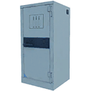
Ammo crates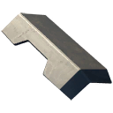
FNIX armor plate 1- FNIX armor plate 2
- FNIX armor plate 3
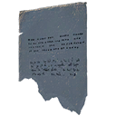
Mysterious transcription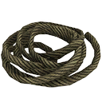
Pile of ropes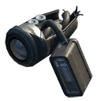
Tank vision module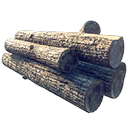
Wood logs
Store description
The struggle for survival continues as the year 1989 draws to a close. Hope for finding the missing population has started to dwindle, as you and your friends continue to do your best to stay away from the invading machines and scour abandoned buildings for weapons and equipment. However, recent scouting missions that you have conducted on your own and with friends have yielded some unexpected results - structures that appear to be made by the FNIX machines have started appearing along the Southern Coast of mainland Östertörn. Thankfully it seems that there are also survivors, scattered across both the Southern Coast, the Archipelago and Farmland regions, putting up resistance against the invaders.
EXPANSION PACK FEATURES
ALTERED LANDSCAPES
As your path leads you back to this previously explored area of Östertörn, you discover that the machines have been busy repurposing the landscape to fit their needs. Massive walls that make up fortifications, ominously glowing generators and the looming cable network are but a few of the structures you have sighted while sneaking through the area. Nearby towns are left in ruins as Harvesters gather up any resource that can be of use, leaving only the shells of buildings that once stood there. It’s unclear what FNIX is planning, but whatever it is can’t be good.
THE RESISTANCE GROWS
Your return to the Archipelago and Farmlands regions has also offered you a glimmer of hope, as you bump into clear signs of human resistance. Where once you associated this region mostly for the clear signs of the struggle between the military and the machines in the early days of the invasion, with towns left in ruins and destruction and death everywhere you looked, you are now finding individuals who have managed to survive despite the odds. Pockets of survivors have managed to bunker down in key locations, utilizing strategic positions to stay safe and maximize damage towards the hostile machines. However, their hold is always tentative at best and the enemies are ruthless in their attacks.
MORE TO DISCOVER
There has been more than just a change to the scenery on the Southern Coast and the Farmland regions, so as you explore make sure to keep your eyes open for new collectibles and clothing, as well as new achievements for you to unlock.
ADDITIONAL GAME FEATURES
MELEE WEAPONS
In the thick of battle, you never want to discover that you are out of ammo. One stroke of bad luck could be what breaks your team up or leaves you dodging bullets, desperately trying to get out of a bad situation. As such, keep your eyes open around the countryside of Östertörn for brännboll bats and sledgehammers. These more rudimentary weapons are perfect for stunning an unprepared Hunter or simply smashing a lunging Tick into tiny pieces.
APOCALYPSE CLASS HARVESTER
It seems that FNIX has been busy building more than just structures on the Southern Coast. Sightings of Apocalypse Class Harvesters have confirmed your fears, and while they seem to primarily be focused on gathering resources around the new buildings, they have been known to tread to other parts of the mainland as well. Usually accompanied by other Apocalypse tier machines, they are formidable on their own as well, known to utilize Biological Aerosol or even Dirty Missiles if you attempt to ambush them.
Free updates5 DLC
These are listed as DLC on Steam but are free: you add them to your library from the store page.
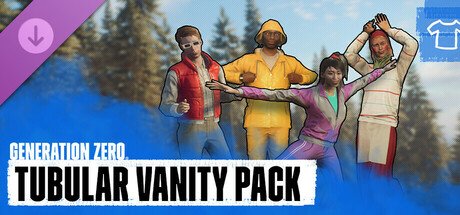
Tubular Vanity Pack
Time to adorn some colourful retro outfits to celebrate spring in true 80s fashion! With four new sets that you can mix and match as you see fit, these outfit combinations consist of new hairstyles, clothing, accessories and more. On top of that you will get 6 ace new emotes.
Adds 23 apparel pieces, 3 face paints and 6 emotes.
What's in it32 items
 Easter hat
Easter hat- Easter kerchief ×5
 Easter scarf ×7
Easter scarf ×7 Easter skirt ×4
Easter skirt ×4 Easter sweater ×7
Easter sweater ×7 Fancy earrings ×5
Fancy earrings ×5- Fisherman sweater ×6
- Hairdo with scrunchie ×5
 Rain boots ×5
Rain boots ×5- Rain hat ×8
- Rain jacket ×9
- Rain pants ×9
 Slap bracelet ×4
Slap bracelet ×4 Timeless 3D glasses ×2
Timeless 3D glasses ×2- Timeless pants ×5
- Timeless shirt ×5
- Timeless short hair ×5
- Timeless teased hair ×5
- Timeless vest ×7
- Workout bandana ×5
- Workout jacket ×6
- Workout leggings ×6
- Workout pants ×6
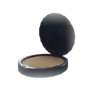
Easter makeup 1- Easter makeup 2
- Easter makeup 3


Store description
Time to adorn some colourful retro outfits to celebrate spring in true 80s fashion! With four new sets that you can mix and match as you see fit, these outfit combinations consist of new hairstyles, clothing, accessories and more. On top of that you will get 6 ace new emotes, which let you dance in the fresh spring sun like a true Swede.
Timeless Set
Go back to the past with the Timeless set, giving you with all the clothes needed to look like a truly fly guerilla fighter. Grab your stylish vest, put enough hairspray in your hair to bring out its true voluminous potential and grab a weapon. Because if you’re forced to fight off the machines, why not do it with style.
Swedish Easter Set
A sign of spring in Sweden is children running around dressed as Easter witches asking for candy. That shouldn’t stop us from dressing the same way to get into the spring spirit, even if society as we know it is gone. Make your cheeks red and rosy, add some fake freckles, put on a feathered hat or scarf and dress up as something straight from old Swedish folklore.
Workout Set
Exercising is essential to a balanced life, and no one knew how to train in more spectacular fashion than the people of the 80s. So what if the population has gone missing and you are already running away from hostile machines on a regular basis? Put on your leg warmers, grab that tennis bandana, slap on those bracelets and break into a sweat looking like a true champion with the Workout set.
Rainproof Set
For locals, Sweden is oftentimes a dreary and rainy place, requiring you to dress for the weather. That doesn’t mean you can’t add a bit of color to cheer you up, even if it means that you might stick out from your surroundings. Grab your yellow rain jacket, put on your boots and prepare to fight the machines regardless of the weather.
Six New Emotes
Grab a boombox and embrace the spring weather with these 6 whacky emotes. Give yourself a pair of bunny ears, cheer to the season, and then begin grooving down to the sick beats using the Rickroll, Chicken Dance, Skip Pop, or Aerobics dance moves.
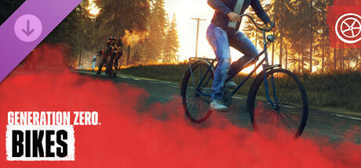
Bikes
You can now traverse the streets, forests, and coasts of Östertörn with a sparkling new bicycle, dodging machines as you go.
Adds 6 vehicle paint jobs.

Store description
You can now traverse the streets, forests, and coasts of Östertörn with a sparkling new bicycle, dodging machines as you go. Not only will you be able to cross greater distances more efficiently, but you will also be able to utilize these handy bikes as strategic tools to lure machines to your ambush location. Just remember, you are not immune to the spray of bullets or rockets that head your way once an enemy spots you.
Cykel Bicycle
The Cykel is a jack-of-all-trades bicycle of Swedish make. Allowing you to gain a great deal of speed on flatter surfaces, the bike makes it faster and easier to discover more safe houses and secrets that the world holds, while also providing a means of gaining distance between you and any machines that might spot you along the way. To get your very own bike, all you need to do is to find a vehicle station at your local safe house. A basic version can be spawned at any time and additional variations can be acquired by defeating powerful machines.
Variations
Available in six different colors, the Cykel that you will receive at the start will be the Sky Blue, with the Emerald Green, Ruby Red, Butter Yellow, Amethyst Purple, and Flamingo Pink made available upon killing certain machine types.
Tactical Advantage
Whether you use it to maneuver around the battlefield, flee from a hopeless battle, or ring the bell to draw the attention of nearby machines, the bike can be used to gain the upper hand. But don't forget that you are not invincible on the Cykel, even if it might feel that way sometimes. A well-timed rocket can and will send you flying!
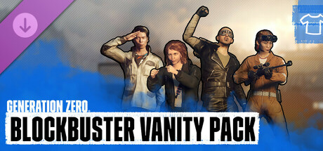
Blockbuster Vanity Pack
Everyone knows that the summer season is a perfect time to sit back with an action-packed blockbuster and let the movie magic happen. And few decades had such excellent ones as the 1980s, so in tribute to some of those, you can now mix and match between 4 iconic new outfits as well as express your love for them using 6 emotes.
Adds 20 apparel pieces, 5 face paints and 6 emotes.
What's in it31 items
 Afro ×5
Afro ×5- Annihilator boots
- Annihilator chain ×3
- Annihilator jacket ×5
- Annihilator pants ×4
 Annihilator shirt
Annihilator shirt Ecto-scientist gloves
Ecto-scientist gloves- Ecto-scientist goggles ×6
- Ecto-scientist overall legs ×6
- Ecto-scientist overall top ×6
- Interceptor boots ×4
- Interceptor gloves ×4
- Interceptor goggles ×2
- Interceptor jacket ×5
- Interceptor pants ×4
- Ruffled hair ×5
- Xeno-specialist boots ×5
- Xeno-specialist jacket ×7
- Xeno-specialist pants ×5
- Xeno-specialist shirt ×6


Store description
Everyone loves to sit back with an action-packed blockbuster and let the movie magic wash over them. And few decades had such excellent ones as the 1980s, so in tribute to some of those, you can now mix and match between 4 iconic new outfits as well as express your love for them using 6 emotes.
Interceptor Set
The sands of the desert may have been replaced by the dark foliage of the woodlands but that doesn’t make it any less unforgiving. With the Interceptor Set, you can wear a dashing leather outfit and goggles as you take the fight to your enemies. For it is a most glorious day and even if you don’t have a battle plan in place, you need to survive no matter what.
Ecto-Scientist Set
It might be hard to know who you are going to call in the case of hostile machines roaming the countryside, but when wearing the Ecto-Scientist Set you aren't afraid of no machines. Put on your jumpsuit, grab a pair of high-tech goggles, and grab your favorite gun. You may not have to worry about crossing any streams but you can still arrive to the action, observe the scene, and kick the machines in the posterior.
Xeno-Specialist Set
With the population gone, no one can hear you scream for help. So channel your inner hero through the Xeno-Specialist Set, with a wild hairdo, ammo straps, and highrise shoes. For the machines are not only incredibly hostile but also structurally perfect. That doesn't mean a few well-placed bullets won’t take them down though.
Annihilator Set
You become the ultimate killing machine when donning the Annihilator Set, perhaps not in combat but most definitely in looks. With a studded jacket, colorful t-shirt, and boots you will look absolutely deadly as you lay your ambushes, line up your shots, and slowly walk away from exploding cars.
Six New Emotes
Dance to those summer blockbuster beats with these 6 choice emotes. From the Pop Princess and One Step, to the Bump and Running Man, your moves will be smooth as butter. Or show your respect to a comrade by doing the Salute or Air Punch.

Rivals & Experimental Weapons
Taking on enemy machines has reached a whole new level with the introduction of the Rival System and Experimental Weapons.
- Rivals: machines that grow stronger and get a name and title
- Experimental weapons, a sixth weapon quality with special ammo


Store description
Taking on enemy machines has reached a whole new level with the introduction of the Rival System and Experimental Weapons. While certain enemies will now be shaped and hardened through your interactions with the world, your new tier of weapons will provide you with enough firepower to hold your own against this new generation of machines.Bitter Rivals
As you combat and take down large numbers of enemies within a certain region, the enemy will begin to regard you as a serious threat and rapidly adapt to aggressively fight back and crush your resistance once and for all. As a result, a machine will evolve, dealing a lot more damage and becoming more resistant to your attacks. These are referred to as Regional Rivals, and upon evolving into a Rival, they will gain a name and a unique title that hints at their past exploits in the war against humans.
Sometimes engaging an enemy won’t go as planned and you or one of your friends will be defeated at the hands of a machine. The enemy that gained the upper hand will evolve into a stronger machine, emboldened by your failure to take it out, and keep on roaming the world - and in many ways it becomes your rival. These are known as Personal Rivals, and will be a harsh reminder of the outcome of your past encounters with them.
Experimental Weaponry
The fight against the machines just got a lot more ruthless. Yet luck has been on your side, as a storage of experimental weapons developed by a secret division of the Swedish army has been discovered. They seem to be a mash-up of weapons we recognize and the technology used by the machines. Each has its own unique and satisfying approach to taking down the enemy.
These weapons include
- Experimental Klaucke 17 - Has a chance to trigger a small EMP explosion
- Experimental AG 4 - Can set machine components on fire due to heated bullets
- Experimental Pvg 90 - Adds a railgun upgrade that increases muzzle velocity and penetration, allowing you to hit multiple enemies with one shot
- Experimental 12G Pump-Action - Features flechette rounds that will explode when armed
- Experimental M/46 "Kpist" SMG - Includes an overdrive function that dramatically increases the fire rate
- Experimental Grg m/49 - Launches 2 grenades in the same burst
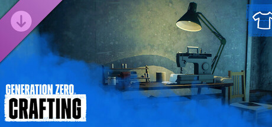
Apparel Crafting
It’s time to turn your ultimate 80s outfits into battle worthy garments with the addition of the Apparel Crafting in this latest update.
Adds 4 keys and quest items, 23 schematics and 11 materials.
What's in it38 items
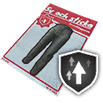
Athletic Pants ×5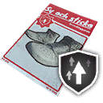
Athletic Shoes ×5- Blast-Resistant Jacket ×5
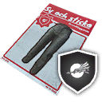
Blast-Resistant Pants ×5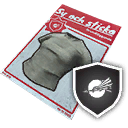
Blast-Resistant Shirt ×5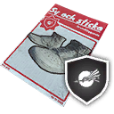
Blast-Resistant Shoes ×5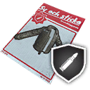
Bullet-Resistant Jacket ×5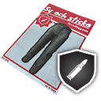
Bullet-Resistant Pants ×5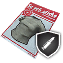
Bullet-Resistant Shirt ×5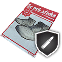
Bullet-Resistant Shoes ×5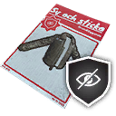
Camouflage Jacket ×5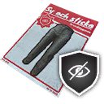
Camouflage Pants ×5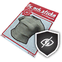
Camouflage Shirt ×5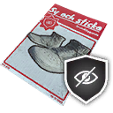
Camouflage Shoes ×5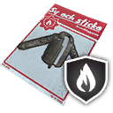
Fireproofed Jacket ×5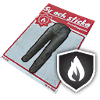
Fireproofed Pants ×5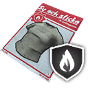
Fireproofed Shirt ×5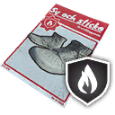
Fireproofed Shoes ×5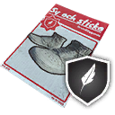
Padded Shoes ×5- Stealthy Jacket ×5
- Stealthy Pants ×5
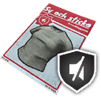
Stealthy Shirt ×5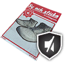
Stealthy Shoes ×5


Store description
It’s time to turn your ultimate 80s outfits into battle worthy garments with the addition of the Apparel Crafting in this latest update. By exploring and scavenging in Östertörn and Himfjäll, you will be able to find crafting materials or objects you can strip down for parts. Use these resources to enhance your clothing, making them as strong as they are fashionable.
Apparel Enhancements
As you explore the world of Generation Zero, completing missions, looting chests, and wandering around the countryside, you will now have a chance to stumble upon schematics that can be used to enhance your apparel. Simply take the clothing of your choice that utilized the same item slot as your schematic, combine it with the right crafting materials and watch your stats go up. Mix and match what enhancements you have to become an even more resilient fighter in the continued conflict against the hostile machines. At the point of the update’s release, there will be over 20 different schematics available to you.
Crafting Materials
Whether you decide to scavenge the abandoned towns and defeated enemies for materials, or recycle equipment and items that are no longer of use to you, you will be able to utilize 6 different crafting resources to boost your character.
The crafting materials you should keep an eye out for in this update are:
Adhesive, Thread, Steel, Rubber, Cloth, and Plastic.
Each schematic is connected to a specific stat, and it is up to you how you best optimize your character to survive potential confrontations with the enemy. You might add visibility reduction to be able to sneak better, or bullet resistance to be able to take more hits before being downed by an overwhelming foe. Whatever combination you chose, your outfit will help you survive longer.
Weapon packs6 DLC
Each pack adds a few weapons, with their ammo and attachments, to the loot of the whole map.
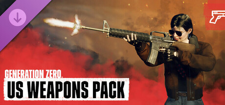
US Weapons Pack
The Resistance has gotten access to 3 US weapons, meant to help them survive against the machines. Which weapon will you wield - the N9 Handgun, the N16 Assault Rifle, or the N60 machine Gun?
Adds 3 weapons.


Store description
Since the fateful day of the "Cataclysm", NATO and the USSR have each been closely monitoring the situation in Sweden, raising their preparedness levels and weighing options.
When proof was obtained that there were survivors hiding in multiple locations in Östertörn, resolution "Reaction: Phase 1" was passed at NATO, as an urgent, temporary solution: large quantities of standard-issue weapons used in the American military were to be dropped all over Östertörn, in order to offer immediate assistance and support to the various groups of survivors.
Mid-tier versions of these three US weapons will now be available in any PLUNDRA storage box on Östertörn; if you are new to the game, you will find them in the storage box at the Iboholmen Church. Higher tier versions of the weapons can also be found by defeating and looting enemies.
These weapons are
N9 Handgun - A proven, medium-power 9mm semi-automatic pistol. Standard-issue pistol for the US Army. Good for short-range encounters and as a last resort when your main weapon runs dry.
N16 Assault Rifle - Standard-issue assault rifle for the US Army. Easy to handle and equipped with a burst fire. Excels at medium to long range encounters due to its accuracy, sight options and fire mode versatility.
N60 Machine Gun - The N60 is a powerful and stable general-purpose machine gun used by the US Army since the late 1950s. Suitable for short to medium range encounters where accuracy is secondary to being able to sustain a high rate of fire without frequent reloads.
Weapon attachments included
- N9 Extended Magazine
- N16 Extended Magazine
- N60 Extended Magazine
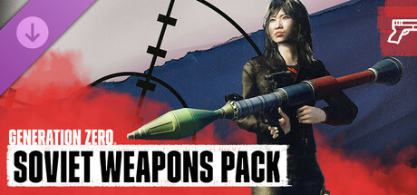
Soviet Weapons Pack
The Resistance has found specialized USSR weapons where FNIX had attacked Soviet soldiers entering Östertörn. These 3 weapons are the Kotenok Sniper Rifle, the AT-WAD Assault Rifle, and the RLG-7 (Rocket Launcher). Which one will you wield?
Adds 3 weapons.
Store description
The Östertörn survivors are no longer the only ones fighting the war against FNIX. Soviet soldiers in small and specialized forces have been seen in the northern regions using moveable defenses to set up temporary camps. They seem to be fighting the machines, but does that make them allies, or do they have their own motives for entering Swedish territory?
The budding Resistance in Östertörn has come across several dead Soviet soldiers, armed with specialized USSR weapons that can be of great use to the Resistance as they learn to use them in the fight against FNIX.
Mid-tier versions of these three Soviet weapon models will be available in any PLUNDRA storage box in Östertörn. If you’re new to the game, you will find them in the storage box at the Iboholmen Church. For the higher-tiered versions, you will have to take the fight to the machines and loot the weapons from their wreckage.
These weapons are
- Kotenok Sniper Rifle - This iconic semi-automatic designated marksman rifle is one of the most common weapons in the USSR. Deployed in a similar way as a machine gun, it can suppress an area with accurate gunfire, keeping your enemies at bay.
- AT-WAD Assault Rifle - Used by special forces such as the Spetsnaz, this silenced automatic rifle features an integrated suppressor, allowing you to shoot more shots before potentially being discovered by your enemy.
- RLG-7 (Rocket Launcher) - One of the most recognizable and widespread rocket-propelled grenade systems ever produced, the RGP-7 is as Soviet as they come. Utilized to fight armoured and fortified positions in almost every conflict since its creation, it should be perfect for taking down robots as well.
Weapon attachments included
- 2.7x RLG-7 Scope
- Kotenok Extended Magazine
- AT-WAD Extended Magazine
- LG-7V High-Explosive Round (ammo for the RLG-7)
- 9x39mm Full Metal Jacket Ammo
- 9x39mm Armor-Piercing Ammo
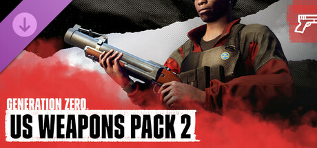
US Weapons Pack 2
The Resistance has discovered new US weapons, dropped there with the intention of helping them fight the machines. Which weapon will you wield - the COM-10 SMG, the S21 or the G79 Grenade Launcher?
Adds 3 weapons.
 COM-10 SMG
COM-10 SMG S21 sniper rifle
S21 sniper rifle G79 Grenade Launcher
G79 Grenade Launcher
Store description
While the survivors of Östertörn have already managed to scavenge some US and Soviet weapons, NATO has decided it’s time to broaden the arsenal even further, dropping another shipment of American weapons across the Resistance controlled territories. While this is still not enough to stave off the machine invasion, it should help the fighters tackle most situations and battles.
Mid-tier versions of these three new US weapon models can be found in the PLUNDRA storage box in Östertörn. If this is your first time playing the game, you will find them in the storage box at the Iboholmen Church. Higher tier versions of the weapons can also be found by taking the fight to the machines and looting the weapons from their wreckage.
These weapons are
- COM-10 SMG - The COM-10 is a high recoil yet very fast firing SMG that is sometimes used by the US army in special operations.
- S21 - A sniper version of the classic S14 battle rifle with improved accuracy and adjustments to fit a scope mount.
- G79 Grenade Launcher - The G79 was created by the US army to grant infantry an impressive mix of firepower, range and accuracy and at the same time achieve being more portable than a mortar.
Weapon attachments included
- COM-10 Silencer - A unique silencer for the COM-10. Attaching this mod will significantly reduce the noise created by each shot.
- COM-10 Extended Magazine - An extended magazine for the COM-10 SMG. Attaching this mod will increase the weapon's ammo capacity.
- S21 Extended Magazine - An extended magazine for the S21. Attaching this mod will increase the weapon's ammo capacity.
- G79 Smoke Grenade - A smoke-producing round that fits the G79 Grenade Launcher. This shell deals no damage but instead creates a smoke screen at the point of impact which hinders enemies' visual prowess.
- G79 HE Grenade - A high-explosive round that fits the G79 Grenade Launcher. This low-velocity shell is capable of dealing moderate explosive damage to armored targets.
- G79 EMP Grenade - A non-damaging, electromagnetic pulse round that fits the G79 Grenade Launcher. This shell, once detonated, is capable of knocking out all electronic devices within a short range for an extended period of time.
Crafting schematics included
- G79 Smoke Grenade - Ammo crafting schematic that makes G79 Smoke Grenades.
- G79 HE Grenade - Ammo crafting schematic that makes G79 HE Grenades.
- G79 EMP Grenade - Ammo crafting schematic that makes G79 EMP Grenades.
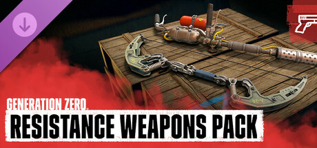
Resistance Weapons Pack
The Resistance has started creating more makeshift weapons to ensure they can continue to fight the machines, even when more conventional ammo is hard to find. Which weapon will you wield - the Pitchfork, Heavy Bow or Flamethrower?
Adds 3 weapons.


Store description
When times get tough, tenacious Resistance fighters need to find more creative ways to keep their armory stocked with effective weapons. With less ammo around, the Resistance of Östertörn have started building their own weapons to keep fighting the machine invasion. Despite their more makeshift nature, these new weapons are proving to be both efficient and deadly.
Mid-tier versions of these three resistance weapons can be found in the PLUNDRA storage box in Östertörn. If this is your first time playing the game, you will find them in the storage box at the Iboholmen Church. Higher tier versions of the weapons can also be found by taking the fight to the machines and looting the weapons from their wreckage.
These weapons are
- Resistance Pitchfork - At first glance it could be dismissed as a simple farmer’s tool, but this pitchfork has been reinforced and transformed into an effective Resistance weapon. The pitchfork has excellent reach, which is great for doing damage from a safer distance.
- Resistance Heavy Bow - Built using scavenged machine parts, this heavy bow packs a powerful punch, but requires more skill to use. The enhanced power of the bow also allows it to fire heavy, modified arrows, making this a versatile tool.
- Resistance Flamethrower - While it may look like an accident waiting to happen, the flamethrower's powerful napalm fuel causes massive damage to machines by sticking to them while it burns, quickly melting its vulnerable internal parts.
Special weapon ammo and attachments include
- Resistance Standard Arrow - A regular arrow that does a lot of damage to components but is weak against armor.
- Resistance Explosive Arrow - A special type of arrow that explodes on impact, dealing extra explosive damage to its target.
- Resistance Flare Arrow - An arrow with an emergency flare attached. The lit flare will lure any enemy's attention and fire away from you and onto the flare, even if that flare is now pinned to another machine.
- 3-Pin Makeshift Bow Sight - This 3-Pin Bow sight features three pins calibrated to hit at a certain distance, working best when the distance to the target is known.
- Large Flamethrower Tank - A larger tank that can hold more fuel, letting you relentlessly melt enemy machines for longer without needing to refuel.
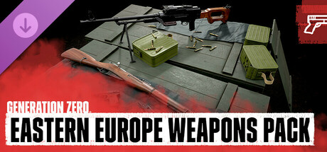
Eastern European Weapons Pack
The Östertörn weapons collection is now expanded with 4 new guns from eastern Europe! Use them to fight deadly machines and raise the resistance!
Adds 4 weapons.
 Volkov Pistol handgun
Volkov Pistol handgun Vosa vz.68 SMG
Vosa vz.68 SMG PM-71 Machine Gun
PM-71 Machine Gun Vintovka 1891 hunting rifle
Vintovka 1891 hunting rifle
Store description
The Östertörn weapons collection is now expanded with new guns from eastern Europe! Use them to fight deadly machines and raise the resistance!
This pack of Eastern European Weapons will bring you:
The Volkov Pistol - the most common handgun used throughout the Cold War era. Semi-automatic, light and easy to handle.
Vosa vz. 68 - Czechoslovakian machine pistol used by special forces units. More agile than traditional submachine guns but just as deadly!
PM-71 Machine Gun - one of most popular machine guns in eastern Europe. Big fire, big range, big damage.
Vintovka 1891 - Classic bolt-action rifle designed in the 19th century. Still used by snipers in the 1980s. Best for precise shots!
And remember: Living is winning!
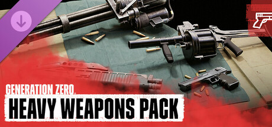
Heavy Weapons Pack
It’s time to wreak havoc across Östertörn! Unleash the action hero within you and take center stage with heavy weapons that really pack a punch.
Adds 4 weapons.
 Iron Condor handgun
Iron Condor handgun N144 Minigun machine gun
N144 Minigun machine gun RACS-12 Semi-Auto Shotgun
RACS-12 Semi-Auto Shotgun MGR-6 Grenade Launcher
MGR-6 Grenade Launcher
Store description
Become the Hollywood action hero that Östertörn deserves!
Grab your bandana, rip off your sleeves, and unleash mayhem on your mechanical foes with four lethal high-caliber weapons that are sure to get your adrenaline pumping.
This pack contains
- MGR-6 - This rugged and reliable grenade launcher was made for chaos. A sluggish reloading process pays off with explosive combat performance. Find yourself in a tight corner? Whip this baby out and unload six rounds of heavy-duty danger.
- N144 Minigun - This is one mean minigun. Often serving as weapon mounts on military helicopters, its rotary barrel design fills the air with a hurricane of lead to bring down even the toughest mechanical foes.
- Iron Condor - Give the machines a reason to hesitate. When the rust buckets see the majestic .44 caliber barrel on your hip, they’re sure to think twice.
- RACS-12 - If things get too close for comfort, turn up the heat. Take full advantage of this rapid-action, semi-auto combat shotgun as you clear the path with 8 rounds of high-speed lead shots.
Equipment and base packs4 DLC
New throwables, gadgets and turrets, or new structures for your bases.
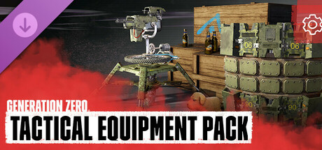
Tactical Equipment Pack
The Resistance fighters have put together a handpicked equipment pack consisting of established and improvised items. These include Molotov cocktails, portable covers, sentry turrets, and explosives.
Adds 1 weapon and 4 pieces of equipment.
 Molotov Cocktail throwable
Molotov Cocktail throwable
Store description
The Resistance fighters have gotten craftier with their combat techniques, trying out both established and improvised equipment for battle purposes. This particular batch brings both explosive and defensive elements to the battle and can be crafted using materials collected across Östertörn. Additionally, a small amount has been put into your PLUNDRA storage box for experimentation purposes. So head out there and wreak some havoc!
- Molotov Cocktail - A classic in warfare, this improvised incendiary weapon packs an explosive punch on impact
- Remote-Controlled Explosive - Sticky explosive that can be detonated using a remote radio-link trigger
- Portable Machine Gun Turret - A small sentry turret equipped with a machine gun that once deployed, automatically fires at nearby enemies.
- Portable Cover - This bullet-resistant but destructible cover allows you to find shelter even in the most open of places, shielding you against oncoming bullets
- Explosive Toy Lure - This cute toy dog attracts unsuspecting machines with loud sounds, and then explodes.
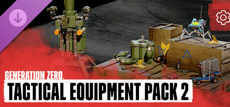
Tactical Equipment Pack 2
Take your guerilla operations to the next level with our second Tactical Equipment DLC! Using scavenged parts and tech, the Resistance have crafted five new items to distract, disrupt, hack, and blow up your enemies!
Adds 5 pieces of equipment.


Store description
The Resistance is getting more and more creative with their crafting skills! Using scavenged parts and tech found across Östertörn, the Resistance have crafted a new batch of field equipment to help them in the fight against the machines!
The second Tactical Equipment Pack contains 5 new equipment items for players to use:
- Toy Car Lure - A modified RC car with flares and a radio strapped to it. Once placed on the ground, this car will drive away at top speed, flares burning and radio at max volume. This lure is great for drawing enemies away from you in a sticky situation.
- Sensory Jammer - The sensory jammer creates a specially tuned EM field when it is activated. This field interferes with the senses of machines, rendering players within it undetectable.
- Hacking Dart - A lawn dart modified with a magnet and hacking device. The dart can be thrown quite far and accurately, allowing you to hit enemies from relative safety. Once attached to a machine, the device disrupts the friend-or-foe identification system, causing it to attack other machines. The effect lasts until the device's battery runs out.
- Remote-Controlled Tick - This modified Tick has had its navigation system overridden, allowing it to be controlled via an RC car transmitter. For good measure, a homemade pipe-bomb has also been attached to it. This allows you to directly control the Tick, sending it into the midst of unsuspecting machines to scout them out and blow them up!
- Portable Homing Turret - This portable turret is a potent weapon against ground and airborne targets alike. It fires compact, rocket-propelled grenades in salvos of 3. The grenades are self-guided and lock on to nearby targets. No machine is safe when one of these turrets are active.
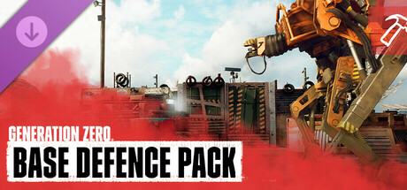
Base Defense Pack
Defending your base from the machines has paid off, and Resistance members have come up with new variations. Get access to their new defenses, including: grenade launcher pillboxes, spiked walls, spiked floors, explosive barrels, human decoys, and sandbag shooting positions.
These are base-building structures; the store description below lists them.
Store description
Your battles with countless machines have paid off - other Resistance members have become inspired by your successes and have designed new structures to help keep your base varied and ready for any kind of attack. This is only the beginning of how to expand on your base, and with the following structures you are ready for battle once more.
- Resistance Grenade Launcher Pillbox - A repurposed tank machine weapon. Manned by a hidden Resistance fighter who fires at any hostile unit that comes within their field of view.
- Resistance Spiked Wall Trap - A reinforced wall that is connected to a pressure plate system which can trigger makeshift spikes. Enemies that come in contact with any of the spikes receive moderate damage.
- Resistance Spiked Floor Trap - A specially constructed floor that is connected to a pressure plate system which can trigger makeshift spikes. Enemies that come in contact with the activated spikes receive moderate damage.
- Resistance Explosive Barrel - A red explosive barrel. It can be utilized as a trap to deal heavy damage to enemies caught within the blast radius.
- Resistance Human Decoy - A decoy designed after a human. This is meant to distract machines from other helpful structures or allies. This decoy activates once a machine comes within view.
- Resistance Sandbag Shooting Position - A sandbag focused, defensive shooting position which allows for good defense against an onslaught of bullets.
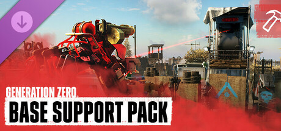
Base Support Pack
As you continue to defend your base against machine attacks, the resistance members have once again come up with new ways to improve it. This pack includes: Sniper turrets, medical trailers, jukeboxes, high wall variations, FNIX machine trophies, and more.
These are base-building structures; the store description below lists them.
Store description
As you continue to successfully fend off countless machine attacks, the Resistance has once again been inspired to create new structures and decorations to upgrade your base with. Whether you decide to fortify your base or simply add a personal touch to it is up to you, but with this pack, you should be ready to face anything.
- Resistance Sniper Tower - A protected tower housing a Resistance sharpshooter with a high-powered sniper rifle. The sharpshooter will use precision fire to pick off any hostile units that come into their field of view.
- Medical Trailer - A makeshift medical station that heals anybody nearby. Stock it with healing consumables before a fight to allow it to function as the perfect one-stop healing spot in the heat of battle.
- Classic Jukebox - Not only does it play various tunes to keep you motivated during the fight, but you can also use it as a lure to get enemy machines off you and other vital targets within the base.
- Security Fences - Keep your enemies away from you without sacrificing your ability to see and shoot them! These chain-link fences are weaker than a regular defensive wall, and they won't protect you from bullets, but they are effective at stopping enemies in their tracks.
- FNIX War Trophies (decorative) - Cherish past victories with these mounted trophies of fallen enemies. Comes in Tick, Runner, Hunter, and Tank variations.
- Portable Spotlight (decorative) - A portable spotlight that you can position to light up strategic spots around their base, covering a 130-degree area.
- Old Outhouse (decorative) - Everybody needs to go sometime, even in the thick of battle, so why not come prepared with an outhouse.
Vehicle packs2 DLC
Motorbikes and three-wheeled flakmopeds, each in six colours.
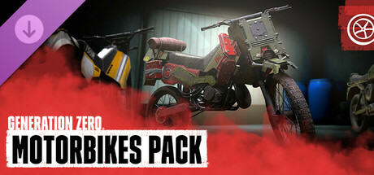
Motorbikes Pack
You can now travel through Östertörn on new types of Motorbikes! It’s faster. It’s louder. It’s more exciting! You can ride on 3 different models: Dirt Bike, Military Motorcycle and Resistance Bike. Each of them has their own strengths and weaknesses.
Adds 18 vehicle paint jobs.
What's in it18 items
 Dirt Bike - Bodacious Blue
Dirt Bike - Bodacious Blue- Dirt Bike - Groovy Green
- Dirt Bike - Hot Pink
- Dirt Bike - Radical Red
- Dirt Bike - Tubular Yellow
- Dirt Bike - Wicked Purple
 Military Motorcycle - Army Green
Military Motorcycle - Army Green- Military Motorcycle - Blazing Red
- Military Motorcycle - Danger Yellow
- Military Motorcycle - Navy Blue
- Military Motorcycle - Royal Purple
- Military Motorcycle - Sunset Pink
 Resistance Custom - Dissident Purple
Resistance Custom - Dissident Purple- Resistance Custom - Guerrilla Green
- Resistance Custom - Punk Blue
- Resistance Custom - Rebel Red
- Resistance Custom - Renegade Yellow
- Resistance Custom - Riot Pink
Store description
You can now travel through Östertörn on new types of Motorbikes! It’s faster. It’s louder. It’s more exciting! The motorbikes will get you places quicker, but they’ll need fuel to drive. Plan your travel strategically so you won't run out of gasoline unexpectedly, and be sure to check out abandoned cars and gas stations and find jerry cans to fuel up. Or craft the fuel by yourself! You can ride on 3 different models. Each of them has their own strengths and weaknesses:
Dirt Bike: Lets you go offroad! It’s powerful enough to drive through vegetation without much of an issue.
Military Motorcycle: Big and clunky but very fast! Not the easiest one to drive but definitely not easy to destroy!
Resistance Bike: Truly resistant motorbike built by the Resistance! The armor around it is made with destroyed machine parts and scrap.
Each motorbike comes with 6 color variations so you can choose the one that matches your 80s style.
Motorbikes are loud, so they can attract enemies if you ride near them. Also remember that they might need repairing from time to time! You can scavenge repair kits or craft your own - the choice is yours.
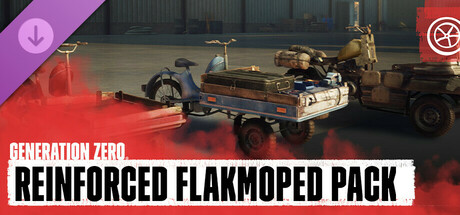
Reinforced Flakmoped Pack
Get the flakmoped fleet for more ways to fight machines and cover a lot of ground fast. Three-wheeled motorbikes modified to carry others on a shielded flatbed, go off road, or bring a mobile crafting station into the field.
Adds 18 vehicle paint jobs.
What's in it18 items
 Bruksflak Blue
Bruksflak Blue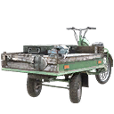
Bruksflak Green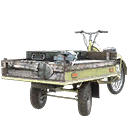
Bruksflak Pink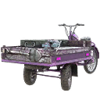
Bruksflak Purple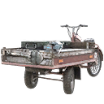
Bruksflak Red- Bruksflak Yellow
 Stridsflak Blue
Stridsflak Blue Stridsflak Green
Stridsflak Green Stridsflak Pink
Stridsflak Pink Stridsflak Purple
Stridsflak Purple Stridsflak Red
Stridsflak Red Stridsflak Yellow
Stridsflak Yellow Terrängflak Blue
Terrängflak Blue Terrängflak Green
Terrängflak Green Terrängflak Pink
Terrängflak Pink Terrängflak Purple
Terrängflak Purple Terrängflak Red
Terrängflak Red Terrängflak Yellow
Terrängflak Yellow
Store description
Cover more ground and do it faster with this fleet of flakmopeds. These three-wheel motorbikes make it quick to get where you need to be or escape the reach of hostile machines. Flakmopeds are light but durable and feature a front flatbed that can carry other Resistance fighters. With unique upgrades and modifications, this specialized fleet gives you new ways to battle the machines.
Meet your fleet
- Stridsflak: Damage machines by crashing into them with this heavily fortified flakmoped. It's ready for the impact – the machines are not. Carry other players in the flatbed. There’s a front shield to protect them while they take aim. Stridsflak has extra hit points, too.
- Terrängflak: Rugged terrain is no problem with this offroader. It's equipped with deep treads and robust suspension to get you and your flatbed passengers across uneven ground faster.
- Bruksflak: In this world, you need to be ready for anything. That makes this utility flakmoped indispensable. It's got a workbench instead of a flatbed, giving you a Plundra storage box, a crafting station, and a recycling station in the field. Change weapons, craft ammo, store loot. Bruksflak gives you options when you need them.
All flakmopeds in the fleet are available in red, blue, green, yellow, pink, and purple.
Cosmetic packs4 DLC
Outfits, emotes, weapon skins and companion cosmetics. They change how you look, not how you play.
Schweet Vanity Pack
The summer warmth has finally reached Sweden, and it’s time to celebrate Midsummer with some schweet new outfits from the 1980s. Mix between the various articles from four stylish new sets, each with a unique combination of accessories, clothing and hairstyles.
Adds 24 apparel pieces, 2 face paints and 5 emotes.
What's in it31 items
- Adventurer fedora ×9
- Adventurer gloves ×6
- Adventurer pants ×8
- Adventurer shirt with ropes ×6
- Adventurer shirt ×6
- Adventurer thin scarf ×8
- Bead necklace ×7
- Flower earrings ×7
- Kronor shirt ×6
- Miami loafers ×9
- Miami shirt ×6
- Miami suit jacket ×14
- Miami suit pants ×11
- Miami sunglasses ×11
- Midsummer blouse ×10
- Midsummer breeches ×8
- Midsummer vest ×11
- Midsummer wreath ×10
- Pants with fanny pack ×6
- Slicked back ×5
- Socks with sandals ×6
- Summer sweater ×9
- Tourist bucket hat ×11
- Tourist camera


Store description
The summer warmth has finally reached Sweden, and it’s time to celebrate Midsummer with some schweet new outfits from the 1980s. Mix between the various articles from four stylish new sets, each with a unique combination of accessories, clothing and hairstyles. Express your excitement with 5 stellar new emotes, and start dancing around the maypole.
Adventurer Set
The Adventurer Set is the perfect outfit to tread through snow and sand alike. Looking like something straight out of a movie with your fedora, necktie, whip and an extra length of rope, you are ready to take on whatever the wilderness throws at you. While there thankfully aren’t any snake pits to fall into, hostile machines are definitely a’plenty.
Miami Set
Fighting machines has never looked cooler with the Miami Set. Beaches and bag guys have been replaced with forests and bullets, but the attire is still as snazzy as ever. With those sunglasses, brightly patterned shirts and tailored suits, your targets don’t stand a chance.
Midsummer Set
Summer in Sweden means midsummer celebrations, and midsummer celebrations aren’t complete without authentic Swedish folk attire and jumping around a maypole like a frog. So put on your floral hair wreath, tie your pants off at the knees and grab a dance partner. Just because the countryside is overrun with deadly machines doesn’t mean you can’t celebrate the arrival of summer in true midsummer style.
Tourist Set
Flash goes the camera as you manage to capture a perfect moment in time. So what if it’s rockets being shot your way by a Tank? This is your vacation and you are definitely going to make the most of it, fanny pack and all. Let the missing local population know you’re visiting with this flashy Tourist Set, and make sure to put on socks with those sandals, for the woods of Sweden await your exploration and your loud charm.
Five New Emotes
Dance in the summer with style with these 5 choice emotes. Jump around the maypole with the Midsummer Dance, or just rock out to old 80s tunes with the Hustle and the Prep. Or simply get into your groove by jamming on your air guitar. The choice is yours.
Camo Weapon Skins Pack
What is the best way to stand out from the Östertörn crowd? Add some color to your life (and rifle)! This DLC brings you 15 weapon skins specially designed to take that flair to the next level.
Adds 16 weapon skins.
What's in it16 items
- Desert Sand Automatgevär 5 Assault Rifle
 Digital Forest AI76 Assault Rifle
Digital Forest AI76 Assault Rifle Disruptive Resistance Meusser Hunting Rifle
Disruptive Resistance Meusser Hunting Rifle- Disruptive Resistance Sjöqvist SemiAuto
 Disruptive Snow AI76 Assault Rifle
Disruptive Snow AI76 Assault Rifle Flecktarn Forest Älgstudsare Hunting Rifle
Flecktarn Forest Älgstudsare Hunting Rifle- Flecktarn Resistance Klaucke 17
- Flecktarn Snow HP5
 Flecktarn Urban Kvm 59 Machine Gun
Flecktarn Urban Kvm 59 Machine Gun- Naval Marine Pansarvärnsgevär 90
 Orange Venom Custom 12G Pump Action
Orange Venom Custom 12G Pump Action Puma Resistance Granatgevär m/49
Puma Resistance Granatgevär m/49 Swedish Resistance M/46 Kpist SMG
Swedish Resistance M/46 Kpist SMG Woodland Forest Kvm 89 Squad Automatic Weapon
Woodland Forest Kvm 89 Squad Automatic Weapon Woodland Resistance Pansarvärnsgevär 90
Woodland Resistance Pansarvärnsgevär 90 Woodland Snow Kvm 59 Machine Gun
Woodland Snow Kvm 59 Machine Gun
Store description
What is the best way to stand out from the Östertörn crowd? Add some color to your life (and rifle)! This DLC brings you 15 weapon skins specially designed to take that flair to the next level.
With this DLC you can choose from 15 weapon skins specially designed for:
- Kvm 89
- Kvm 59 x2
- Pansarvärnsgevär 90 (Pvg 90) x2
- "Älgstudsare" Hunting Rifle
- HP5
- Klaucke 17
- Sjöqvist Semi-Auto
- AI-76 x2
- Meusser Hunting Rifle
- Granatgevär m/49
- Automatgevär 5 (AG 5)
- 12G Pump-Action
Apply a camo pattern to your gun by using the weapon skins to shoot machines with style!
Companion Accessories Pack
Pack offers three strategic modules: Medic, Scavenger, and Spotter. Also, advanced armor such as Ballistic Plates, Concussive Plates, and Firebreak Insulation. Plus, enjoy 11 cosmetic options for your Companion.
Adds 17 companion items.
What's in it17 items
- Astrid Voice Box
- Ballistic Plate Armor ×4
- Black Fire Paint Job
- Blue Thunder Paint Job
- Bubblegum Paint Job
- Concussive Plate Armor ×4
- Digi-Dog Voice Box
- Firebreak Armor ×4
- Grand Prix Paint Job
- Hazed Light Kit
- Mecha Monster Paint Job
- Medic Module
- Neon Light Kit
- Scavenger Module
- Speak & Learn Voice Box
- Spotter Module
- Toxic Glow Light Kit
Store description
The Resistance has discovered a way to hack a Runner Machine and make it friendly. This Companion Accessories Pack gives you several new equipment and customization options for your new Machine Companion.
The Machine Companion can be equipped with one of three additional behavior modules that provide extra functionality in and out of combat:
- Medic Module - Gives the Companion the ability to use medical supplies from its inventory to heal you when you’re wounded
- Scavenger Module - Equips the Companion with the ability to collect items from defeated foes and store them in its inventory
- Spotter Module - Allows the Companion to mark enemy machines, increasing the damage they take in combat
Also, you can research various advanced armor options to craft for your Machine Companion:
- Ballistic Plates - Offers enhanced protection from bullet damage
- Concussive Plates - Provides superior defense against explosions
- Firebreak Insulation - Gives improved shielding from fire damage
Finally, you get access to 11 new cosmetic enhancements to give your Companion a personal touch:
- Five distinctive Paint Jobs - “Black Fire”, “Blue Thunder”, “Bubblegum”, “Grand Prix”, and “Mecha Monster”
- Three Light Kits - “Toxic Glow”, “Hazed”, and “Neon”
- Three Voice Boxes - “Digi-dog”, “Speak & Learn”, and “Astrid”
Advanced Intelligence Cosmetics Pack
Pack offers ten new weapon skins in three themes: Prototype, Artificial Intelligence, and Apocalypse. New cosmetics for the Machine Companion: Apocalypse Class Companion Skin, Light Kit and Voice Box, and a Vocoder Voice Box.
Adds 10 weapon skins and 4 companion items.
What's in it14 items
 Apocalypse 12G Pump Action
Apocalypse 12G Pump Action- Apocalypse Klaucke 17
- Apocalypse Meusser Hunting Rifle
 Artificial Intelligence .44 Magnus
Artificial Intelligence .44 Magnus- Artificial Intelligence Automatgevär 5 Assault Rifle
- Artificial Intelligence Granatgevär m/49
- Artificial Intelligence Pansarvärnsgevär 90
- Prototype AI76 Assault Rifle
- Prototype M/46 Kpist SMG
- Prototype Möller PP
Store description
They say if you know your enemy well, you learn to wear his skin. As Resistance, you understand nothing better than the machines you fight day in, day out. That makes these new weapon skins, themed after the different FNIX machine classes, a fitting reward for your survival.
- Three industrial orange Prototype skins for the AI-76 Assault Rifle, Möller PP, and M/46 "Kpist" SMG.
- Four intimidating red and black Artificial Intelligence skins with light emissive maps for the Granatgevär m/49, .44 Magnus, Automatgevär 5, and Pansarvärnsgevär 90.
- Three radioactive teal and yellow Apocalypse skins with light emissive maps for the Meusser Hunting Rifle, 12G Pump-Action, and Klaucke 17.
Your hacked Machine Companion is proving a useful tactical asset. If you survive, this could be the start of a beautiful friendship. So why not customize your rusty sidekick? This pack includes the gritty cosmetics of Apocalypse class machines for your Machine Companion.
- Apocalypse Class Companion Skin: The colors and patterns of the deadly Apocalypse class machines, including their emissive glow sections.
- Apocalypse Companion Light Kit: A radioactive yellow light kit to match their new Apocalypse Class skin and voice box.
- Apocalypse Voice Box: Sounds inspired by the Apocalypse class machines.
- Vocoder Voice Box: Sounds like a sinister space robot you shouldn’t entrust with your safety.
Other item packs15 packs
The game files sort items into packs. These packs are not sold as a DLC: they hold the base game, free updates such as the Machine Companion, rewards and event outfits. The names here describe what is in each pack; the files don't name them.
Everything that comes with the game itself. That includes 561 cosmetic items: see Apparel, Emotes & face paint and Weapon skins.
Machine Companion37 items
The companion's basic parts, paint jobs, voice boxes and tricks.


- Aggressive Threat Plate Armor ×4
- Azure Paint Job
- Bare Metal Paint Job
- Beast Voice Box
- Byzantine Paint Job
- Cinnabar Paint Job
- Dazzle Camo Paint Job
- Desert Camo Paint Job
- FNIX Runner Paint Job
- FNIX Runner Voice Box
- Goldenrod Paint Job
- Hazard Light Kit
- House Pet Voice Box
- Lunar New Year Paint Job
- Mechanical Voice Box
- Miami Paint Job
- Military Runner Paint Job
- Modulator Voice Box
- Ochre Paint Job
- Resistance Paint Job
- Runner Armor ×4
- Runner Light Kit
- Runner Module
- Runner Prototype Paint Job
- Runner Rocket Launcher
- Runner Shotgun
- Runner SMG
- Rust Paint Job
- Sage Paint Job
- Search Light Kit
- Shale Paint Job
- Stealth Camo Paint Job
- Stealth Cladding Armor ×4
- Tiger Paint Job
Story outfits23 items
Clothing from the story: the hazard suit, FNIX machine pieces, Child of the Apocalypse and more.
 Child of the Apocalypse Boots
Child of the Apocalypse Boots Child of the Apocalypse Hat
Child of the Apocalypse Hat Child of the Apocalypse Jacket
Child of the Apocalypse Jacket Child of the Apocalypse Pants
Child of the Apocalypse Pants- FNIX Harvester gloves
- FNIX Hunter jacket
- FNIX Runner boots
- FNIX Seeker goggles
- FNIX Tank jeans
- FNIX Tick helmet
- Fredrik Holberg's RÖ access badge
 Hazard suit boots
Hazard suit boots Hazard suit gas mask
Hazard suit gas mask Hazard suit gloves
Hazard suit gloves Hazard suit jacket
Hazard suit jacket Hazard suit pants
Hazard suit pants- Soviet ring with bear insignia
- Star ring
- Uncle Calle's tin foil hat
- Veronika Nilsson's nerdy T-shirt
- Von Ulmer's FOA 53 lab coat
- Vråken pilot breathing gear
- Vråken pilot breathing gear with aviators
Autumn outfits24 items
Slayer's, Elegant, Antarctic and Worn outfits, face paint and emotes.
- Antarctic cowboy hat ×4
- Antarctic jacket ×3
- Antarctic pants ×5
- Antarctic sunglasses
- Elegant silk gloves ×4
- Elegant tailcoat ×5
- Elegant top hat ×5
- Elegant vest ×5
- Slayer's gloves
- Slayer's leather hat
- Slayer's shoes ×2
- Slayer's sweater ×4
- Stalker's hockey mask
- Winter mittens ×4
- Worn flannel jacket ×2
- Worn leather gloves ×2
- Worn pants ×2
- Worn shirt ×6


Soviet outfits10 items
Soviet Soldier and Soviet Exosuit clothing.
Experimental outfit7 items
The Experimental helmet, jacket, pants and more. The game files mark these items as downloadable content.
Rewards6 items
Reward hats, the varsity jacket, backpacks and two weapon skins.

- Funky Floral Automatgevär 4 Assault Rifle
- Party Pop Bright Kvm 89 Squad Automatic Weapon
Street Art8 items
Street Art weapon skins and two companion voice boxes.
- Street Art - "Älgstudsare" Hunting Rifle
- Street Art - AI-76 Assault Rifle
- Street Art - Automatgevär 4 (AG 4) Automatgevär 4 Assault Rifle
- Street Art - Kvm 59 Kvm 59 Machine Gun
- Street Art - Kvm 89 Kvm 89 Squad Automatic Weapon
- Street Art - Sledgehammer
Retro casual6 items
Band tees, bomber jacket, rolled-up jeans and more. The game files mark these items as downloadable content.
Sporty5 items
Puffy sport jacket, tights and cyclist cap. The game files mark these items as downloadable content.
Cyberpunk5 items
The Cyberpunk outfit. The game files mark these items as downloadable content.
Varsity jacket1 item
A single Generation Zero varsity jacket. The game files mark these items as downloadable content.
Flakmoped6 items
Flakmoped paint jobs.


Tuned Moped6 items


Tracking device1 item
A single mission item.